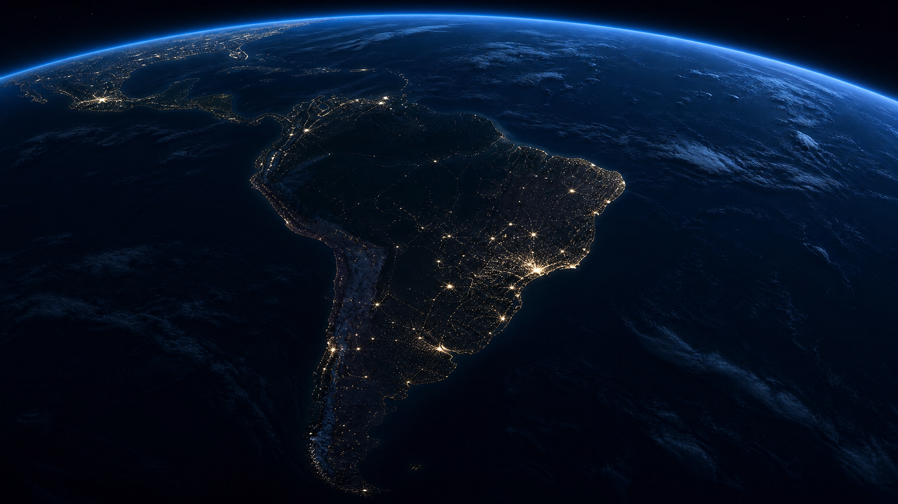
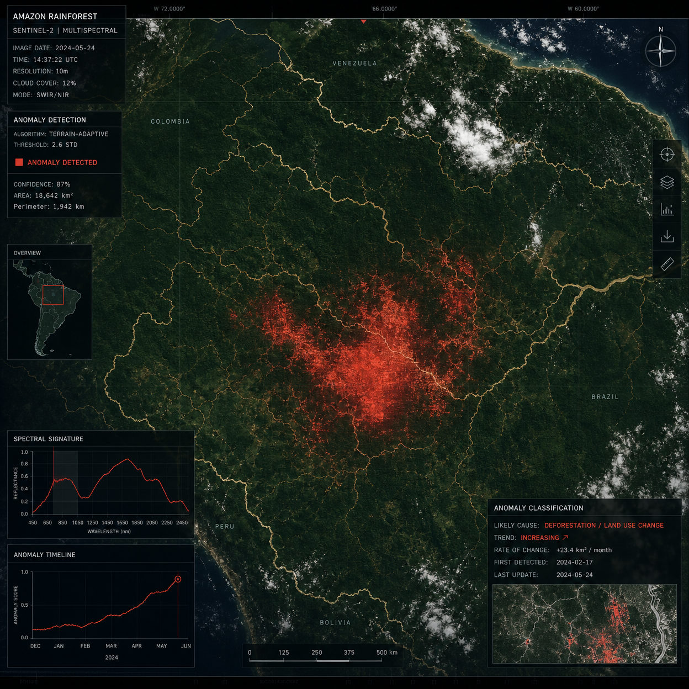
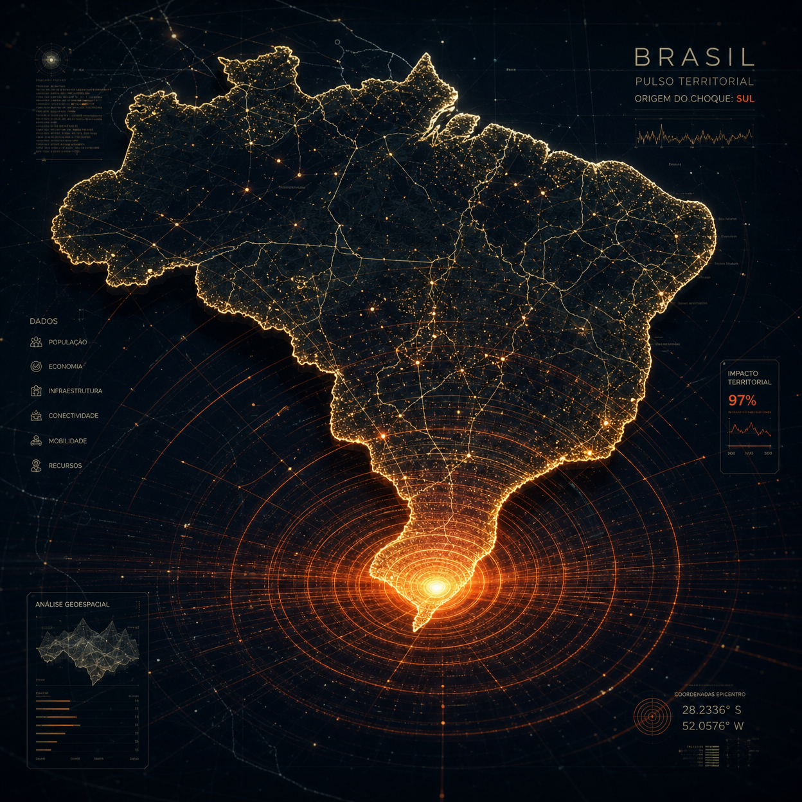
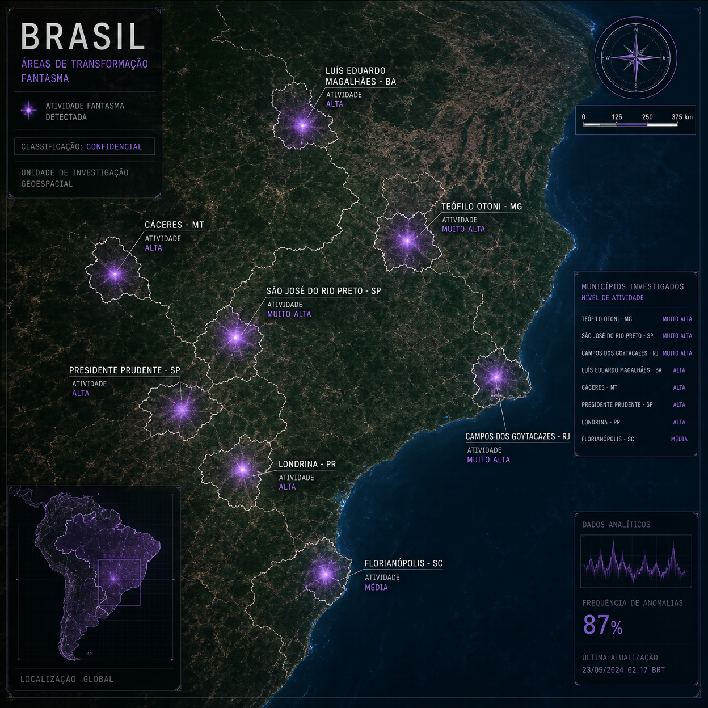

GhostWorks transforma território em inteligência acionável. Detectamos riscos, mudanças e oportunidades operacionais através de evidência física verificável por satélite, eliminando pontos cegos na sua gestão.




Estes casos são demonstrações de uma metodologia escalável. O GhostWorks não entrega apenas um PDF; ele entrega uma infraestrutura de monitoramento que pode ser aplicada a: